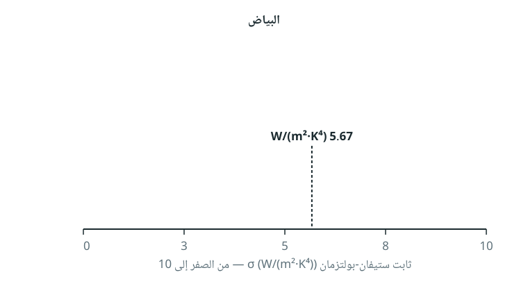

البياض
Albedo
البياض هو نسبة الإشعاع الشمسي المنعكس من سطح إلى الإشعاع الساقط عليه، ويُعبَّر عنه بعدد بلا وحدة بين صفر وواحد. يحدد حصة الطاقة التي يمتصها السطح.
البياض، أو الانعكاسية، هو نسبة الإشعاع الشمسي المنعكس من سطح إلى الإشعاع الساقط عليه، ويُعبَّر عنه بعدد بلا وحدة بين صفر وواحد أو بنسبة مئوية. وهو خاصية للسطح تعتمد على لونه ونسيجه وزاوية سقوط الضوء. والبياض هو ما يحدد كم من الطاقة الشمسية يمتصه السطح وكم يعيده إلى الفضاء، فهو لذلك عامل أساسي في توازن الطاقة الأرضي وفي المناخ. الثلج الطازج من أعلى الأسطح بياضاً، والماء المفتوح من أدناها لأنه يمتص معظم الإشعاع الساقط. والفرق بين سطحين في البياض يعني فرقاً كبيراً في الطاقة الممتصة، وهو ما يفسّر اختلاف الحرارة بين رمل صحراوي وثلج. مثال: سطح بياضه 0.80 يتلقى 1000 W/m² يعكس 800 W/m² ويمتص 200 W/m²، بينما سطح بياضه 0.10 يمتص 900 W/m².
كيف تعمل الظاهرة؟
البياض ينشأ من تفاعل الإشعاع الشمسي مع سطح المادة على مستوى الجسيمات. حين يسقط الضوء على سطح، إما ينعكس على السطح مباشرة، أو يدخل المادة ويُشتَّت في اتجاهات متعددة، أو يُمتص ويُحوَّل حرارة. البياض يقيس مجموع ما يخرج من السطح من الجهة الساقطة، انعكاساً مباشراً أو منتشراً. ولذلك يكون الثلج عالي البياض: بلوراته الشفافة تُشتّت الضوء مرات كثيرة قبل أن يخرج، فيخرج معظمه. ويكون الماء منخفض البياض لأن الضوء يدخل ويُمتص في العمق. وهذا الفرق هو ما يجعل ذوبان الجليد حلقة تغذية راجعة: ذوبان الثلج يكشف الماء أو الأرض الأغمق، فيرتفع الامتصاص، فيتسارع الذوبان.
العلاقة بالأرقام
α = R_refl/R_inc بلا وحدة. والطاقة الممتصة = (1 − α)·R_inc. وتوازن السطح: (1 − α)·R_inc = ε·σ·T⁴ + تدفقات أخرى. مثال عددي: α = 0.80 وR_inc = 1000 W/m²: الطاقة الممتصة 200 W/m². ولو كان ε = 0.98 لكانت درجة حرارة التوازن الإشعاعي T = (200/(0.98 × 5.670 374 419×10⁻⁸))^0.25 = 245 K تقريباً. ولسطح α = 0.10: الممتص 900 W/m²، وT = 358 K تقريباً — فرق كبير جداً.
مفاهيم متقاربة
البياض ليس الانبعاثية: الأولى في الطيف الشمسي القصير والثانية في الأشعة تحت الحمراء الحرارية، وهما مستقلتان. وليس اللمعان ولا اللون. وليس النفاذية، فالجسم الشفاف قد ينفذ الضوء بلا أن يعكسه. والخطأ الشائع أن يُقال إن السطح الأبيض دائماً أبرد؛ في بيئة باردة قد يكون الأبيض أبرد فعلاً لأنه يعكس، لكن في بيئة حارة قد يكون الأبيض أدفأ إذا كانت انبعاثيته الحرارية منخفضة. وأخيراً البياض ليس ثابتاً، فهو يعتمد على زاوية السقوط.
حدود التطبيق
البياض قيمة متوسطة على مدى طيفي، ولا يصف الانعكاس عند طول موجي واحد؛ لذلك تُستعمل قيم طيفية عند الحاجة. وهو يعتمد على زاوية السقوط، فالسطح نفسه له بياض مختلف عند الشمس المنخفضة. وفي الأسطح غير المتجانسة كالغابات والمدن، يُستعمل بياض فعّال متوسط لا بياض مادة واحدة. ولا يُستعمل البياض وحده للتنبؤ بدرجة حرارة السطح، فذلك يحتاج الانبعاثية والتدفقات الحسّاسة والكامنة.

| الكمية | القيمة | المصدر |
|---|---|---|
| ثابت ستيفان-بولتزمان σ | 5.670 374 419×10⁻⁸ W/(m²·K⁴) | [1] |
المصادر
- 1 CODATA Value: Stefan-Boltzmann constant — NIST — CODATA 2022 recommended values (2024). physics.nist.gov/cgi-bin/cuu/Value?sigma · اطُّلع عليه 2026-11-21
- 2 CODATA Value: speed of light in vacuum — NIST — CODATA 2022 recommended values (2024). physics.nist.gov/cgi-bin/cuu/Value?c · اطُّلع عليه 2026-11-21
- 3 CODATA Value: Boltzmann constant — NIST — CODATA 2022 recommended values (2024). physics.nist.gov/cgi-bin/cuu/Value?k · اطُّلع عليه 2026-11-21
استشهد بهذا المصطلح
الصيغتان مبنيتان من بيانات الصفحة نفسها: العنوان والتاريخ ورابط النسخة المنشورة.
البياض — Albedo. (2026). ديوان المعرفة — انفراد. https://infiradev.com/diwan/terms/term-albedo.html
@misc{term-albedo2026,
title = {البياض},
titleaddon = {Albedo},
howpublished = {{ديوان المعرفة — انفراد} — مرجع علمي عربي},
year = {2026},
url = {https://infiradev.com/diwan/terms/term-albedo.html},
urldate = {2026-11-26},
note = {مراجعة علمية: hermes (مراجعة معتمدة 2026-11-26)}
}
راجعه: hermes (مراجعة معتمدة 2026-11-26) · 2026-11-26 · آخر تحديث 2026-11-21